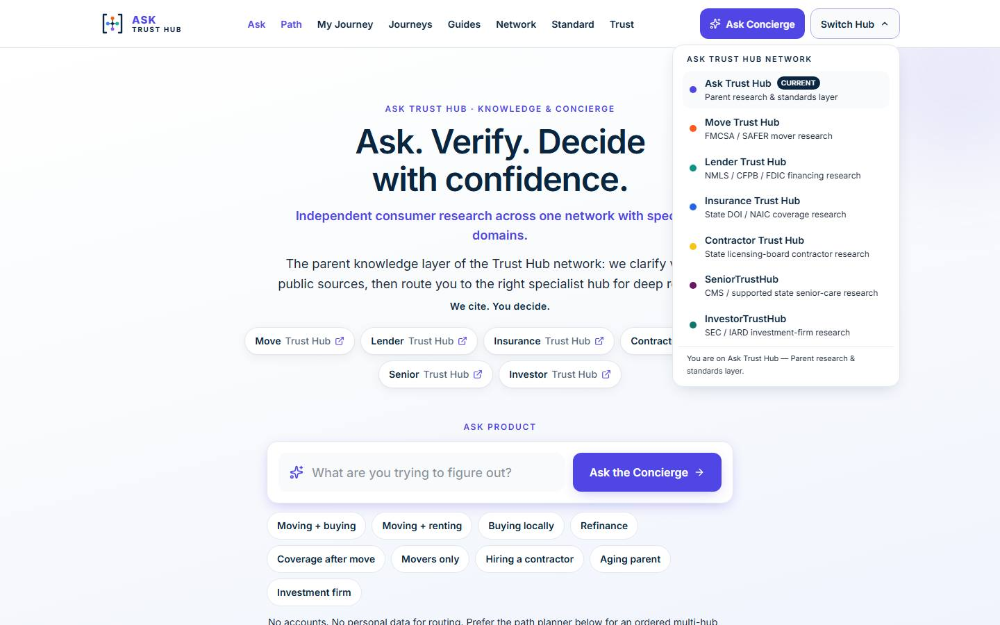

Same-scale proof that TRUSTHUB_VISUAL_STANDARD_V1 can unify the network without flattening Investor. Ask production reference (VISUAL-002) vs Investor new shell (VISUAL-003).
| Measurement @ 1440 | Ask | Investor | Delta |
|---|---|---|---|
| Header height | 69 | 69 | 0 |
| Logo optical mark | 36 @ (144,16) | 36 @ (144,16) | 0 |
| Logo left edge | 144 | 144 | 0 |
| Switch Hub | 44 × 129 @ x=1167 | 44 × 129 @ x=1167 | 0 |
| Shell left (logo x) | 144 | 144 | ±0 (target ±2) |
| Overflow | 0 | 0 | 0 |





Stable: header height, mark optical height, logo left edge, control height, Switch Hub geometry, shell edge.
Changed: logo color, accent, Investor terminology, cream canvas, editorial serif, no Concierge.